La Federación Nacional de Cafeteros de Colombia anunció hoy el esquema de retención de café con el que elevará los precios del producto.
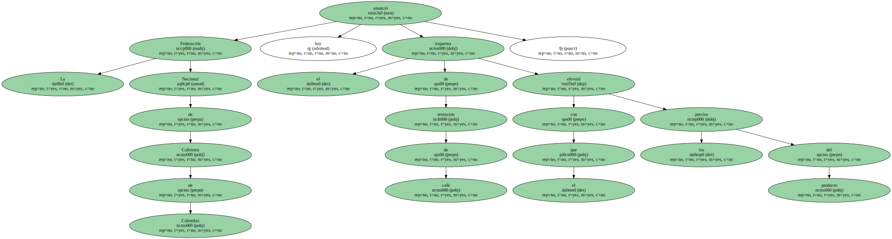La Federación cumple así con lo acordado por el Consejo de la Asociación de Países Productores de Café ( APPC ) en la reunión del Londres el pasado 19 de mayo.
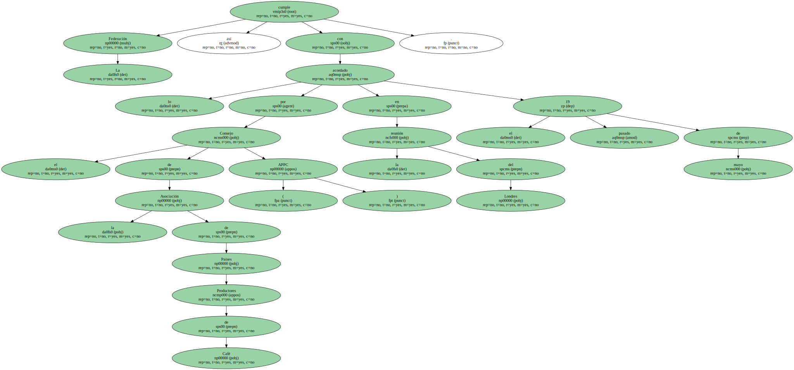La federación , en un comunicado , recuerda que Colombia iniciará su retención el uno de octubre , fecha en la que comienza su cosecha de café.
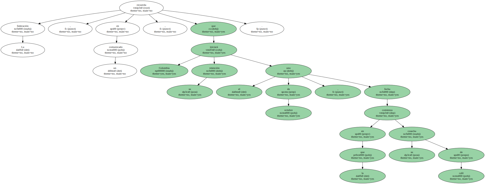Los firmantes del acuerdo de productores para retener hasta un 20 por ciento de la producción exportable pactaron informar a la APPC antes del 16 de junio del esquema que aplicarán para su plan de retención.
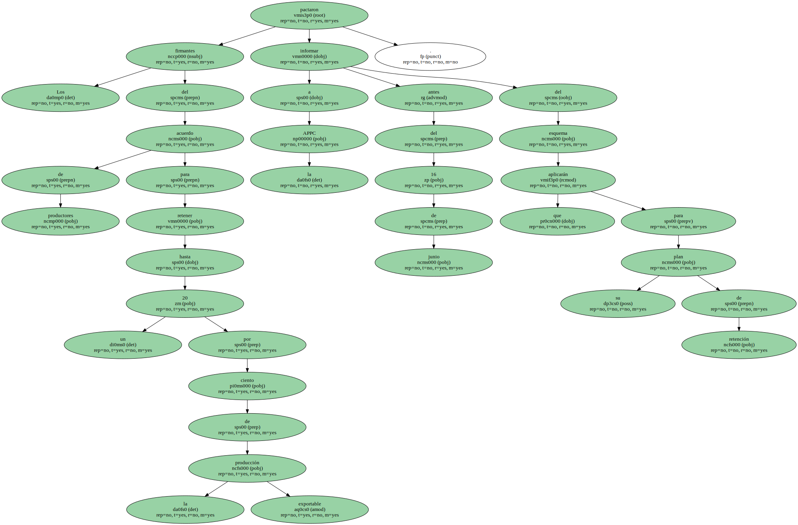Colombia , segundo cultivador y exportador de café después de Brasil , calculaba exportaciones para los dos años de retención de cerca de 20 millones de sacas de 60 kilos , de los que guardará un máximo de 4 millones de sacas , que no destinará ni siquiera para consumo interno.
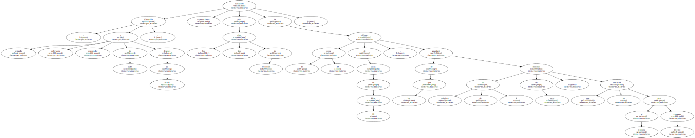Además se establece el seguimiento de los anuncios de ventas al exterior para todos los exportadores ( registros de venta ) y la compra directa por parte del Fondo Nacional del Café de un mínimo del 20 por ciento del café de la cosecha que se destina a exportar.
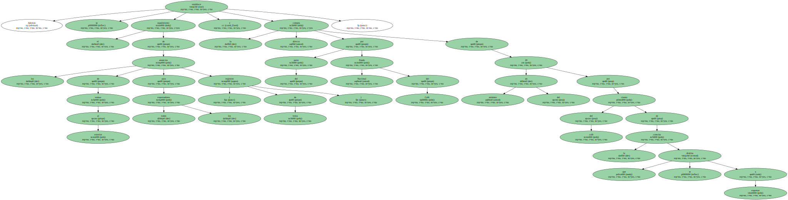El grano retenido se guardará en los Almacenes Generales de Depósito de Café y se identificará como tal en las bodegas dispuestas para ello.
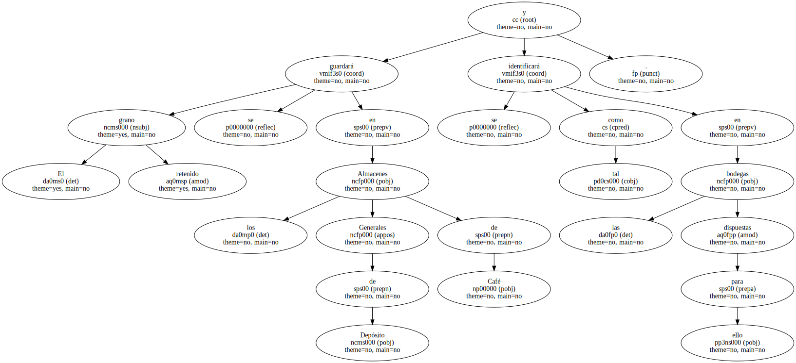Las autoridades continuarán exigiendo el certificado de origen de la Organización Internacional del Café ( OIC ) , como requisito para poder exportar.
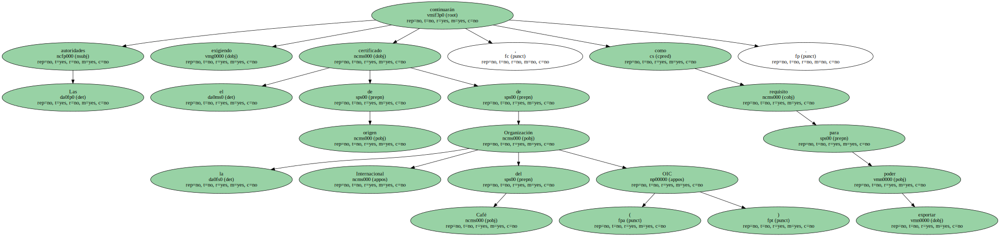Los países cultivadores , 33 en total , que representan el 85 por ciento de la producción mundial de café , acordaron en Londres retener hasta un 20 por ciento de la producción a partir de Junio y por 24 meses para recuperar la cotización internacional del grano.

Sin embargo , el precio externo , desde que se anunció el pacto entre productores , en vez de reaccionar al alza ha ido a la baja.
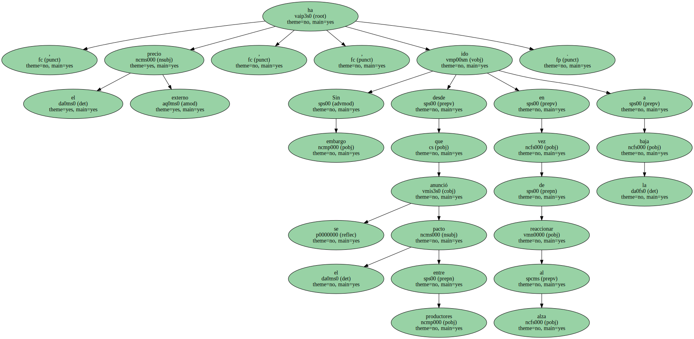Para el caso del grano colombiano , la cotización de hoy para entregas en Junio cayó a 103,6 centavos de dólar por libra , el valor más bajo desde el 12 de Octubre del año pasado reciente comenzó el periodo cafetero octubre de 1999 a septiembre de 2000.
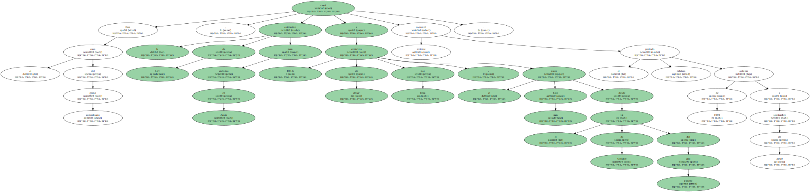En el caso de las cotizaciones en la bolsa de Café , Cacao y Azúcar de Nueva York para los suaves centroamericanos el precio de hoy fue de 95,3 centavos de dólar , también uno de los más bajos desde octubre de 1999.
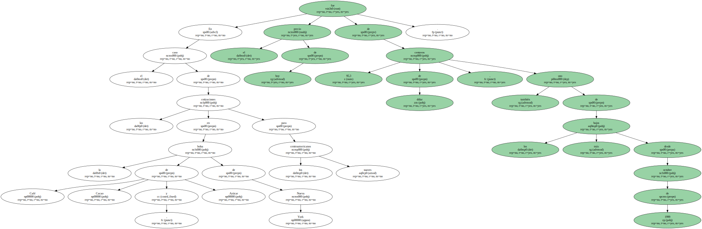